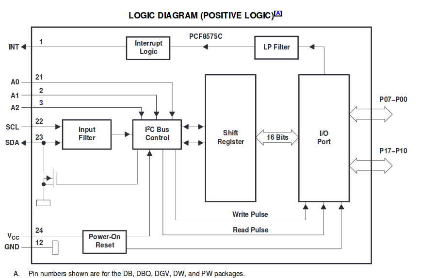
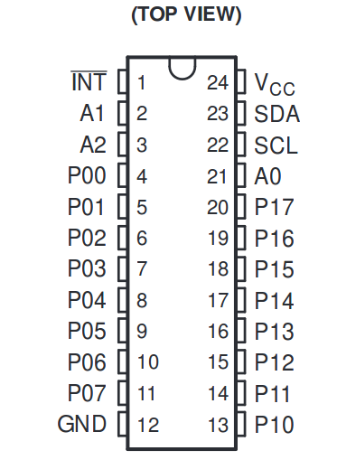
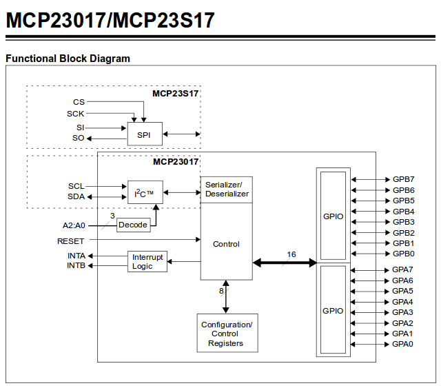
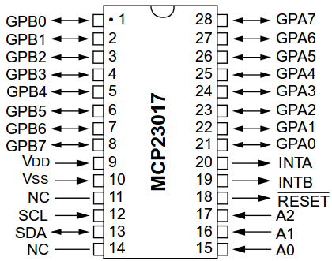
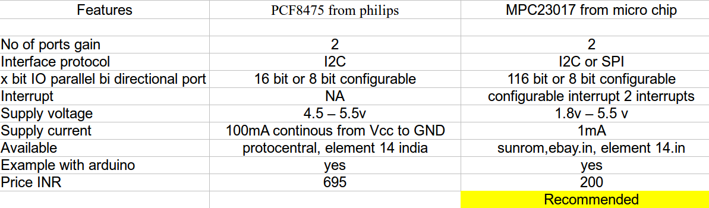

Port expansion
People are expanding thier general purpose IO ports based on some protocols
- I2C Bus interface.
- SPI interfacing.
Port expander ICs are used frequently used, companies are
- Philips, PCF8574
- Maxim
- Microchip
From philiphs, Tutotial from here
Intro
The I2C bus can be used to extend the number of IO lines. A frequently used chip for this is the PCF8574 which offers 8 IO lines. The PCF8474 has multiple address lines so the I2C address can be changed.
Features
- Operating Voltage 2.5v to 6v.
- Low stand by current of 10uA maximum.
- I2C bus to parallel port expander.
- 16 addressable individual IO pins.
- Package available in DIP24.
- This ic remains simple device.
- This is bi directional.
- Two Port is been provided by this IC.
- Vendor Availability
- From element14 india
- Detailed datasheet from TI
- Examples are available for AVR and mbedded too.
- Block Diagram shown below

- Pin configuration of DIP package

- Profit of using this : we will get 2, 8 bit digital, bi directional port, on I2C bus.
From microchip Please check here
INTRO
- The Microchip MCP23017 16-bit serial expander with I2C serial interface. This 28-pin IC offers sixteen inputs or outputs – and up to eight of the ICs can be used on one I2C bus… offering a maximum of 128 extra I/O ports.
Features
- Operating Voltage 1.8v to 5.5v
- Low stand by current 1uAmax.
- Three hardware address pins to allow up to eight devices on the bus.
- High SPEED SPI interface. Upto 100 MHz.
- HIGH SPEED I2C interface. Upto 1.7 MHz.
- 16 bit bi directional IO port.
- IO ports are input by default.
- 28 pin DIP package.
- Configurable interrupt output pins
- Configurable as active-high, active-low or open-drain
- INTA and INTB can be configured to operate independently or together.
- Block diagram is shown below

- Pin Configuration of the same

- Example with arduino.
- sunrom technology, with interfacing schematic
- Vendor availability in ebay india.
- in.element14 vendor.
- Advantage to use this is , we will have 2 ports from this IC.
- I2C and SPI interfacing mode with fast communication speed.
- Interrupt logic available.
- Parallel IO expansion with I2C or SPI interfacing.
- Configurable to operate as 8 bit or 16 bit IO port.
- This 28-pin IC offers sixteen inputs or outputs – and up to eight of the ICs can be used on one I2C bus… offering a maximum of 128 extra I/O ports.
Comparision table based on some parameters

What more can be done around the way
- Expanding the arduino, the cheapest way around
- Hack a day , simple pin expansion with user comments underneath
- expand-io-ports-with-another-arduino, with sample code
- arduino nxp port expander examples giving